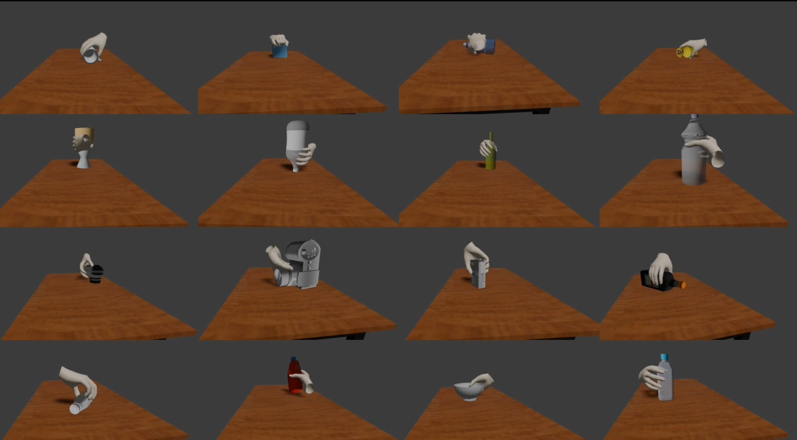

|
Yi-Lin Wei | 卫奕霖 I am a second-year Ph.D. student in computer science at Sun Yat-Sen University, at iSEE Lab, advised by Prof. Wei-Shi Zheng. Before that, I obtained my M.S. in control science and engineering from Sortheast University advised by Prof. Dan Niu. And I obotained B.S. in automation from Northeastern University. |

|
ResearchI'm interested in robotics AI, specially computer vision driven dexterous grasp and manipulation. I am always open to academic discussions and potential collaborations. Please feel free to reach out! |

|
Grasp as You Say: Language-guided Dexterous Grasp Generation
Yi-Lin Wei, Jian-Jian Jiang, Chengyi Xing, Xian-Tuo Tan, Xiao-Ming Wu, Hao Li, Mark Cutkosky, Wei-Shi Zheng NeurIPS, 2024 arXiv page / project page / code A novel task enables robots to perform dexterous grasping based on human commands. |

|
Dexterous Grasp Tranformer
Guohao Xu*, Yi-Lin Wei*, Dian Zheng, Xiao-Ming Wu, Wei-Shi Zheng CVPR, 2024 arXiv page / project page / code A novel discriminative framework for dexterous grasp generation by formulating it as a set prediction task. |

|
Real-to-Sim Grasp: Rethinking the Gap between Simulation and Real World in Grasp Detection
Jia-Feng Cai , Zi-Bo Chen, Xiao-Ming Wu, Jian-Jian Jiang, Yi-Lin Wei, Wei-Shi Zheng CoRL, 2024 paper page / project page / code A new Real-to-Sim framework for 6-DoF Grasp detection, with the key insight of bridging sim-to-real gap in a real-to-sim way. |

|
An Economic Framework for 6-DoF Grasp Detection
Xiao-Ming Wu*, Jia-Feng Cai*, Jian-Jian Jiang Dian Zheng, Yi-Lin Wei, Wei-Shi Zheng ECCV, 2024 arXiv page / code A new economic grasping framework for 6-DoF grasp detection to economize the training resource cost and meanwhile maintain effective grasp performance. |
|

|
Single-view Scene Point Cloud Human Grasp Generation
Yan-Kang Wang, Chengyi Xing, Yi-Lin Wei, Xiao-Ming Wu, Wei-Shi Zheng CVPR, 2024 arXiv page / code A novel task of generating human grasps based on single-view scene point clouds. |
Academic ServicesReviewer for CVPR 2025, NeurIPS 2024. ICLR 2024. |
|
|